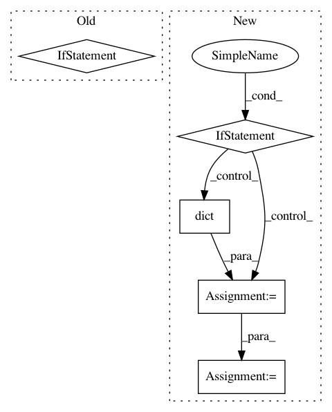

9b7004cbbf674beb5cc486cf524e07dc8f7324a3,skopt/optimizer/optimizer.py,Optimizer,__init__,#Optimizer#,171
Before Change
elif initial_point_generator == "halton":
from skopt.samples import Halton
self._initial_point_generator = Halton()
elif initial_point_generator == "hammersly":
from skopt.samples import Hammersly
self._initial_point_generator = Hammersly()
elif initial_point_generator in ["lhs", "lhs_classic"]:
After Change
self._initial_samples = None
self._initial_point_generator = initial_point_generator
if init_point_gen_kwargs is None:
init_point_gen_kwargs = dict()
self.init_point_gen_kwargs = init_point_gen_kwargs
if initial_point_generator != "random" and \
isinstance(initial_point_generator, str):
if initial_point_generator == "sobol":
from skopt.samples import Sobol
In pattern: SUPERPATTERN
Frequency: 3
Non-data size: 5
Instances
Project Name: scikit-optimize/scikit-optimize
Commit Name: 9b7004cbbf674beb5cc486cf524e07dc8f7324a3
Time: 2020-02-15
Author: holgernahrstaedt@gmx.de
File Name: skopt/optimizer/optimizer.py
Class Name: Optimizer
Method Name: __init__
Project Name: scikit-optimize/scikit-optimize
Commit Name: ddca7f56ce7a154c2284d6464cf872a1f4992f3d
Time: 2020-02-20
Author: holgernahrstaedt@gmx.de
File Name: skopt/optimizer/optimizer.py
Class Name: Optimizer
Method Name: __init__
Project Name: rasbt/mlxtend
Commit Name: 5016a008790087d9cb47e7f91099f3dba7960ee2
Time: 2019-03-14
Author: 36086881+qiagu@users.noreply.github.com
File Name: mlxtend/regressor/stacking_cv_regression.py
Class Name: StackingCVRegressor
Method Name: fit